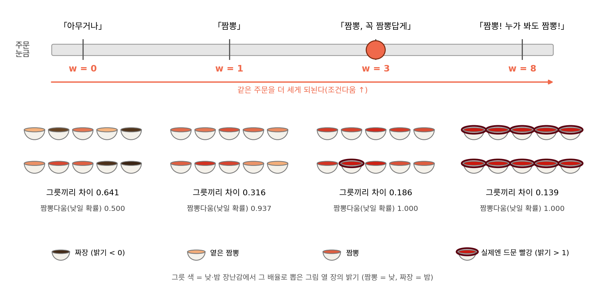
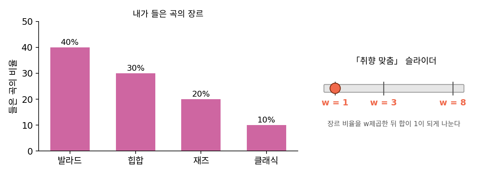
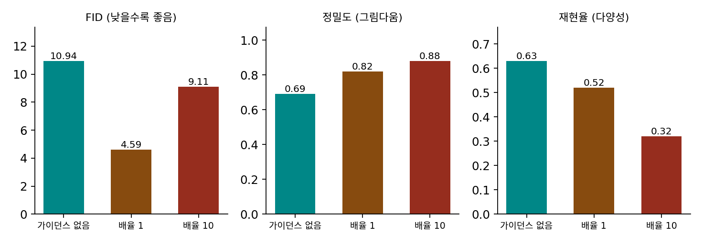

다양성과 조건다움: 배율 하나로 맞바꾸는 두 가지
분류기 가이던스를 시험한 다리왈과 니콜은 배율을 키우는 일을 「다양성을 내주고 충실도를 얻는」 거래라 불렀고, 분류기 없는 가이던스의 호와 샐리먼스도 배율을 올릴수록 IS(그림 한 장 한 장이 한 범주로 얼마나 또렷한지)는 오르고, FID(만든 그림 묶음과 실제 사진 묶음의 특징 분포가 얼마나 다른지)는 작은 배율에서 가장 좋았다가 나빠진다고 적었다. ComfyUI의 cfg 칸 설명도 「창의성과 프롬프트를 따르는 정도 사이의 균형」을 말한다. 세 곳이 같은 거래를 말하는데, 내주는 「다양성」과 얻는 「조건다움」은 각각 무엇으로 재야 할까? 그리고 배율 1이 배운 분포를 그대로 재현하는 값이라면, 왜 기본값은 8일까?
두 저울: 그림끼리의 차이와 분류기의 확신
낮·밤 장난감에서 두 양을 따로 재 보자. 조건다움은 그림 한 장을 놓고 잴 수 있어서, 뽑은 그림마다 「이 그림이 낮일 확률」 p(낮 ∣ x)을 매겨 평균을 낸다. 다양성은 한 장으로는 잴 수 없으니, 같은 배율로 뽑은 그림 두 장을 무작위로 짝지어 밝기 차이의 평균을 낸다. 배율마다 낮 그림 2만 장을 「코드: 낮 그림을 배율마다 뽑기」와 똑같이(정확한 두 예측, 오일러 30스텝, 같은 시드) 뽑았다(sources/guidance/tradeoff_numbers.py). 맨 아래 줄은 비교할 기준인 낮 그림 데이터 자체다. 마지막 칸은 낮 데이터에 15.9% 들어 있는 어두운 낮 그림(밝기 0.2 아래, 흐린 날의 낮 사진이라고 생각하자)이 뽑힌 그림에 얼마나 남았는지다.
| 배율 w | 조건다움: 낮일 확률의 평균 | 다양성: 두 그림의 밝기 차이 평균 | 밝기 0.2 아래의 낮 그림 |
|---|---|---|---|
| 0 | 0.500 | 0.641 | (밤 그림이 섞임) |
| 1 | 0.937 | 0.316 | 14.7% |
| 2 | 0.997 | 0.219 | 0.03% |
| 3 | 1.000 | 0.186 | 0% |
| 5 | 1.000 | 0.157 | 0% |
| 8 | 1.000 | 0.139 | 0% |
| 낮 데이터 | 0.928 | 0.339 | 15.9% |
배율 1은 데이터와 거의 같다(0.937과 0.928, 0.316과 0.339). 배율을 1에서 2로 올리자 조건다움은 0.997로 거의 꼭대기에 닿았고, 다양성은 0.316에서 0.219로 줄었다. 그 뒤로는 조건다움이 더 오를 자리가 없는데도 다양성은 0.186, 0.157, 0.139로 계속 준다. 줄어드는 모양도 고르지 않았다. 흐린 날의 낮 그림처럼 분류기가 「밤일 수도 있다」고 보던 쪽이 배율 2에서 거의 다 사라졌다. 다양성은 그림들이 고르게 조금씩 좁아지며 줄어든 것이 아니라, 조건의 경계 쪽에 있던 그림부터 통째로 빠지며 줄었다. 이렇게 배율 하나를 올리면 그림 한 장 한 장의 조건다움은 오르고 같은 조건으로 뽑은 그림들끼리의 다양성은 주는 관계를 다양성과 조건다움의 저울질 (배율 하나로 한쪽을 내주고 다른 쪽을 얻는 관계 / diversity–fidelity trade-off)이라 한다.

비유가 깨지는 곳도 있다. 식당에서 「매운 짬뽕 곱빼기 양파 빼고」처럼 말을 보태면 주문 자체가 바뀌어 다른 메뉴가 된다. 가이던스 배율은 말을 보태지 않는다. 같은 주문 「짬뽕」을 몇 번 세게 되뇌느냐만 정해서, 짬뽕다운 그릇만 남기고 경계에 있던 그릇을 지운다.
ML에서: 낮은 온도 샘플링과 닮은 꼴
호와 샐리먼스는 논문 첫 문장에서 분류기 가이던스를 「다른 생성 모델의 낮은 온도 샘플링이나 잘라내기(truncation)와 같은 취지로, 모드를 덮는 정도와 샘플의 충실도를 맞바꾸는 방법」이라고 소개했다. 잘라내기는 GAN에서 입력 노이즈의 범위를 좁혀 다양성을 줄이는 대신 한 장 한 장을 좋게 만드는 방법이다. 같은 논문은 디퓨전 모델에서 온도를 곧장 낮추려는 시도(스코어에 상수를 곱하거나 역방향 과정의 노이즈 분산을 줄이기)가 흐리고 질이 낮은 그림을 낸다고 다리왈과 니콜을 인용해 적었다. 디퓨전 모델에서는 다른 모델에서 온도가 맡던 일을 가이던스 배율이 맡았다.
닮았지만 같지는 않다. 장난감에서 낮 그림의 분포 N(0.5, 0.3²)을 온도 1/8로 식히면(확률을 8제곱) 평균 0.5는 그대로이고 표준편차만 0.106으로 준다. 배율 8의 가이던스로 뽑은 그림은 표준편차가 0.125로 비슷하게 줄었지만 평균이 1.150으로 옮겨 갔다. 온도는 분포를 제자리에서 조이고, 가이던스는 조건 없는 예측에서 멀어지는 쪽으로 밀며 조인다.
개념 다지기: 배율 1이 배운 분포 그대로라면 왜 기본값은 8일까

표만 보면 배율 1이 제일 정직하잖아요. 조건다움도 다양성도 데이터랑 거의 같고요. 그런데 ComfyUI 기본값이 8이면, 다들 정직하지 않은 그림을 원하는 거예요?

장난감에서 배율 1이 데이터와 같았던 건 무엇 덕분이었죠?

장난감은 두 예측을 식으로 계산해서 넣었으니까요. 배운 조건부 분포가 실제 조건부 분포랑 똑같았어요.

실제 모델에서도 그럴까요? 다리왈과 니콜이 배율 1로 걸었을 때 무슨 일이 있었는지 떠올려 봐요.

분류기는 원하는 범주의 확률을 50% 안팎으로 매겼는데, 눈으로 보면 그 범주가 아니었다고 했죠. 음… 그럼 실제 모델이 배운 조건부 분포는 진짜 조건부 분포보다 조건을 덜 따르는 쪽으로 퍼져 있었을 수도 있겠네요.

그거 장난감으로 해 볼 수 있겠다. 모델이 낮·밤 그림을 실제보다 넓게, 표준편차 0.45로 배웠다고 치고 돌려 볼게. 배율 1이면 애매한 그림이 24.6%야. 실제 낮 데이터의 15.7%보다 많아. 배율 2면 1.9%로 줄고, 표준편차는 0.308이라 실제 낮 그림의 0.3이랑 비슷해. 평균은 0.765로 오른쪽에 치우치긴 했지만.

그래요. 그런 모델이라면 배율은 모델의 모자람을 메우는 데도 쓰여요. 다만 이 장난감은 「넓게 배운 모델이라면」을 가정해서 돌린 것이고, 실제 모델이 얼마나 넓게 배웠는지는 말해 주지 않아요.

그래도 8은 많아 보여요. 장난감에서는 배율 2부터 조건다움이 꼭대기였고, 그 뒤로는 다양성만 줄었잖아요.

그림 만드는 사람은 보통 한 장씩 보고 고르잖아. 한 장이 프롬프트를 잘 따르는지는 바로 보이는데, 같은 프롬프트로 뽑은 그림들이 서로 닮았는지는 여러 장을 나란히 놓아야 보여.
좋은 관찰이에요. 그럼 다양성이 줄었다는 건, 학습 그림을 베껴 낸다는 뜻일까요?
음… 배율 8의 숫자부터 볼게요. 뽑은 그림의 91.0%가 밝기 1을 넘는데, 낮 데이터에서 밝기 1을 넘는 그림은 4.8%뿐이었어요.
그럼 학습 그림을 베낀 게 아니라, 학습 그림이 거의 없는 데로 간 거네.

응. 다양성은 뽑은 그림끼리 비교해서 재고, 학습 그림을 베꼈는지는 학습 그림과 비교해서 재야 해. 저울이 다른 거야.
그래요. 같은 조건으로 그림 백 장을 뽑을 때 그 백 장이 얼마나 달라야 하는지는 쓰는 사람마다 달라요. 그래서 배율은 하나로 정해진 정답이 아니라, 무엇을 얼마나 내줄지 쓰는 사람이 고르는 값이에요.
문제 10. 음악 앱의 「취향 맞춤」 슬라이더
내가 들은 곡을 장르별로 세어 보니 발라드 40%, 힙합 30%, 재즈 20%, 클래식 10%였다. 음악 앱의 「취향 맞춤」 슬라이더를 w에 두면, 장르마다 그 비율을 w제곱한 뒤 합이 1이 되게 나눈 비율로 다음 곡의 장르를 고른다. (가) w = 1과 3에서 장르 비율은? (나) 고르는 비율 p의 엔트로피 H = −Σ p log p를 「장르 몇 개를 고르게 고르는 것과 같은가」로 바꾼 값 e^H(유효 후보 수)는 각각 얼마인가? (다) w = 8이면 클래식은 얼마나 나오는가? 이 슬라이더는 가이던스의 어느 식과 같은 꼴인가?

(가)는 바로 돼요. w = 1이면 그대로 0.4, 0.3, 0.2, 0.1이고, w = 3이면 세제곱해서 0.064, 0.027, 0.008, 0.001, 합이 0.1이니까 나누면 0.64, 0.27, 0.08, 0.01이에요.
(나)는 코드로 셌어요. w = 1이면 H = 1.28이라 유효 후보 수 3.60, w = 3이면 0.887이라 2.43이에요.
장르는 그대로 넷인데 유효 후보 수가 3.60에서 2.43으로 줄었어요. 어느 장르가 얼마나 줄었는지 보면요?
힙합은 30%에서 27%로 거의 그대론데, 클래식은 10%에서 1%로 열 배 줄었어요. 음… 원래 적게 나오던 장르일수록 더 많이 줄어요.
(다)는 w = 8이면 발라드 90.6%, 힙합 9.1%, 재즈 0.35%고, 클래식은 100곡에 0.0014곡이야. 만 곡을 들어도 한 곡이 안 나와. 유효 후보 수는 1.39. 슬라이더를 끝까지 올리면 거의 발라드만 듣게 되네.
로그로 보면 이 슬라이더는 무엇을 하고 있어요?

log p에 w를 곱하고 다시 합을 1로 맞추니까, 로그 확률을 온도 1/w로 나눈 softmax예요. 분류기 가이던스에서 분류기의 확률을 w제곱한 것과 같은 꼴이고요. 그래서 낮 그림에서도 경계 쪽 그림부터 사라졌구나.
문제 11. 정밀도는 오르는데 FID는 다시 나빠진다
다리왈·니콜(2021) 표 4의 숫자다. 가로세로 256픽셀 ImageNet에서 라벨을 넣어 배운 모델에 분류기를 덧대지 않았을 때, 배율 1로 덧댔을 때, 배율 10으로 덧댔을 때를 비교한다. 세 경우의 FID는 10.94, 4.59, 9.11, 정밀도(만든 그림 가운데 진짜 사진들 가까이에 있는 그림의 비율)는 0.69, 0.82, 0.88, 재현율(진짜 사진 가운데 만든 그림들 가까이에 있는 사진의 비율)은 0.63, 0.52, 0.32다. (가) 배율 1에서 10으로 갈 때 정밀도와 재현율은 각각 얼마나 바뀌는가? (나) 정밀도는 계속 오르는데 FID는 왜 배율 1에서 가장 좋고 10에서 다시 나빠지는가? (다) 세 경우는 이 책의 배율 w로 각각 얼마인가?

(가)는 정밀도가 0.82에서 0.88로 0.06 오르고, 재현율은 0.52에서 0.32로 0.20 떨어져요. 오른 것보다 떨어진 게 세 배 넘게 크네요.
FID는 낮을수록 좋았죠. 정밀도는 계속 좋아지는데, FID는 왜 배율 10에서 9.11로 다시 나빠졌을까요?
정밀도가 좋아지면 FID도 좋아져야 할 것 같은데… 잠깐, FID는 그림 한 장을 재는 값이었나요?
처음 소개할 때를 떠올려 봐요. 무엇과 무엇을 견줬죠?
만든 그림 묶음과 실제 사진 묶음의 특징 분포요. 그럼 그림 한 장 한 장이 범주다워져도, 묶음이 한쪽으로 좁아지면 실제 사진 묶음과 멀어져요. 재현율이 0.32로 떨어진 만큼 FID가 그 값을 치른 거네요.
(다)는 라벨을 넣어 배운 모델이라 이 책의 w로는 논문 배율에 1을 더해야 해요. 덧대지 않은 것이 w = 1, 배율 1이 2, 배율 10이 11이에요.
낮·밤 장난감에서 w = 1에서 2로 갈 때와 견주면요?

잠깐, 장난감 표를 다시 보면… w = 2에서 조건다움이 0.997로 거의 다 올랐고, 그 뒤로는 다양성만 줄었어요. ImageNet에서도 배율 1(이 책의 2)까지는 얻는 게 컸고, 배율 10(이 책의 11)에서는 얻은 정밀도 0.06보다 내준 재현율 0.20이 더 컸던 거네요.